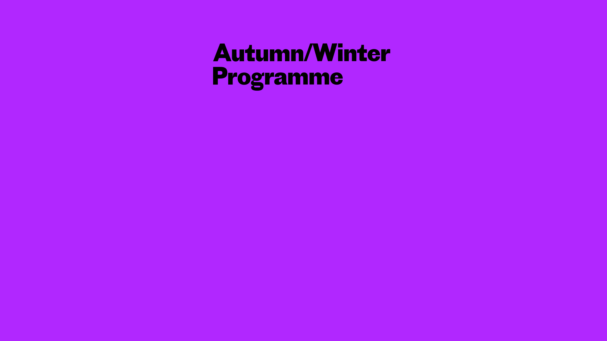

Village Underground
Audioshader
4
FPS
--
Load
--
Text
--
Purple
Red
Blue
01
Wave X
02
Map Zoom
03
RGB Split
04
Vertical Map
05
Wide Wave
06
Y Wave
07
Soft Split
08
Y Drift
Bass
Mid
Treble
Track
Brother-Music-Typhoon.mp3
Volume / Amount
100%
Effect Mult
1.9x
Threshold
75%
Mic Mult
4.0x
Field animation
Noise Scale
2.40
Path Speed
-0.010
Curve %
50%
Field Width
2.85
Path Offset
32px
Falloff
Smooth
Soft Tail
Long Tail
Hard Core
Text animation
Text Speed
-0.010
Export settings
Import settings
Mic
Mute
Drop MP3 to replace audio